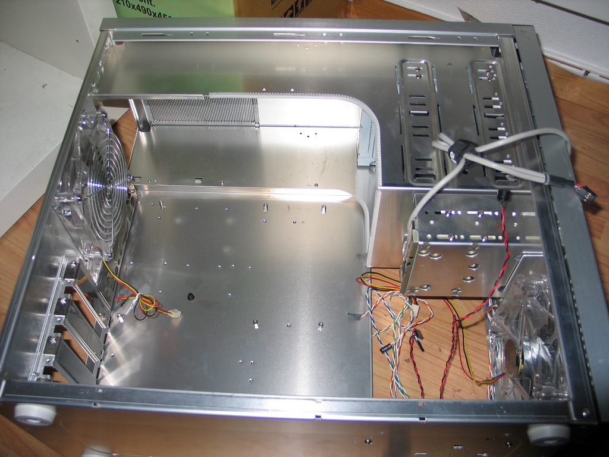

Here are the basics for installing a motherboard
- Open your case (usually using your screwdriver),
and take a look inside.

- Screw your standoffs into your case if you have them.
If using plastic spacers instead, put screws through the appropriate
holes in your motherboard and then through the spacers.
- Sometimes you have to remove an I/O panel shield before
you can fit the motherboard inside. If you put your motherboard
in and see a place where your I/O ports should stick out of the
case, remove the small metal panel and try again.
- Place the motherboard inside the case and use your screws
to fasten it in place. Use your Phillips to tighten it.
- Connect the power supply. This is a set of wires ending
in a connector that comes from the power supply. Find the corresponding
plug on your motherboard and connect it. You may not have access to
this after other parts are connected so make sure this comes first.